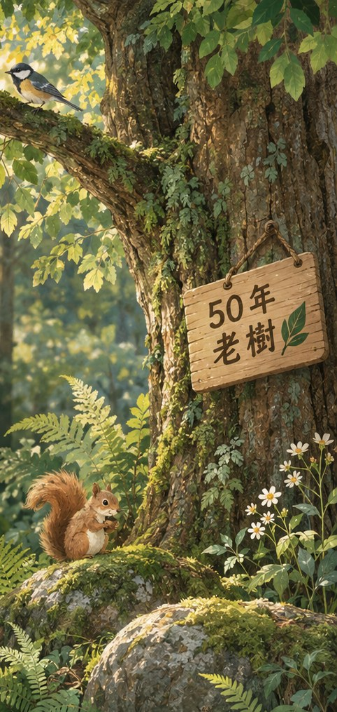
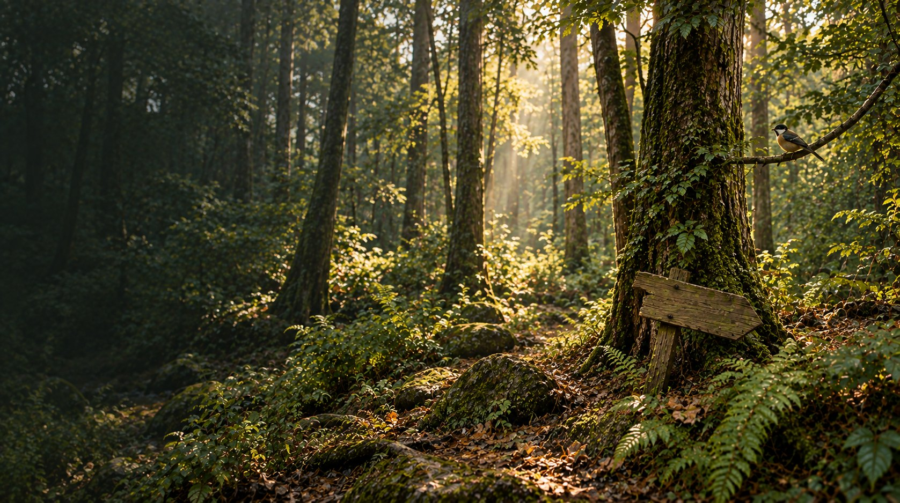
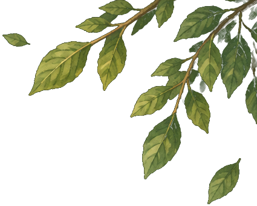
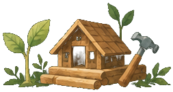
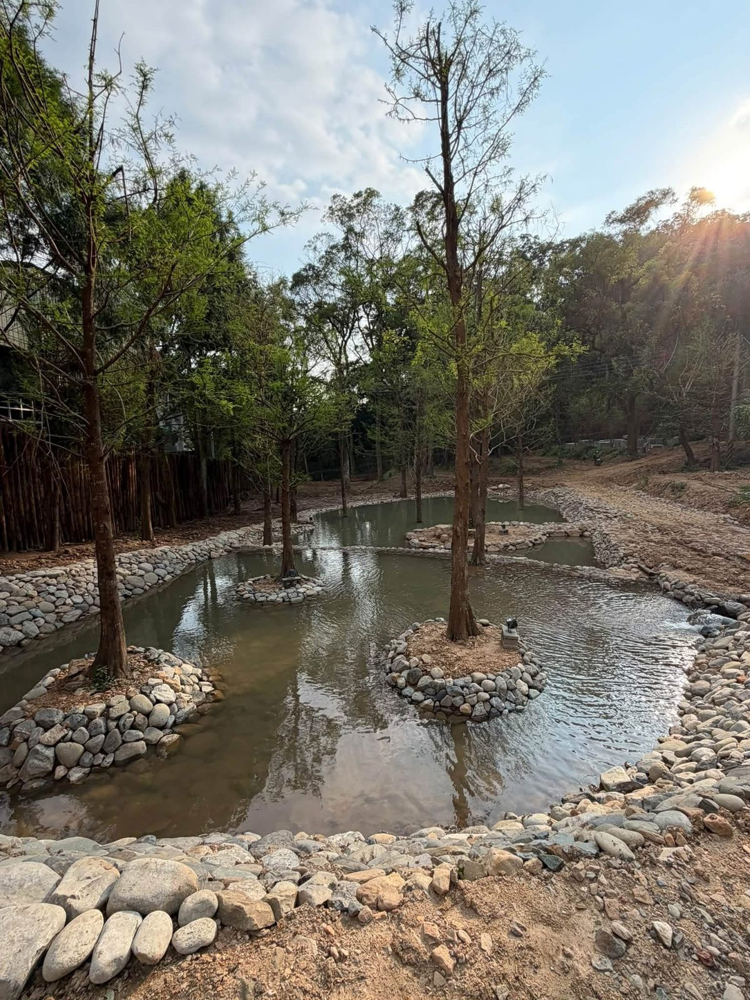
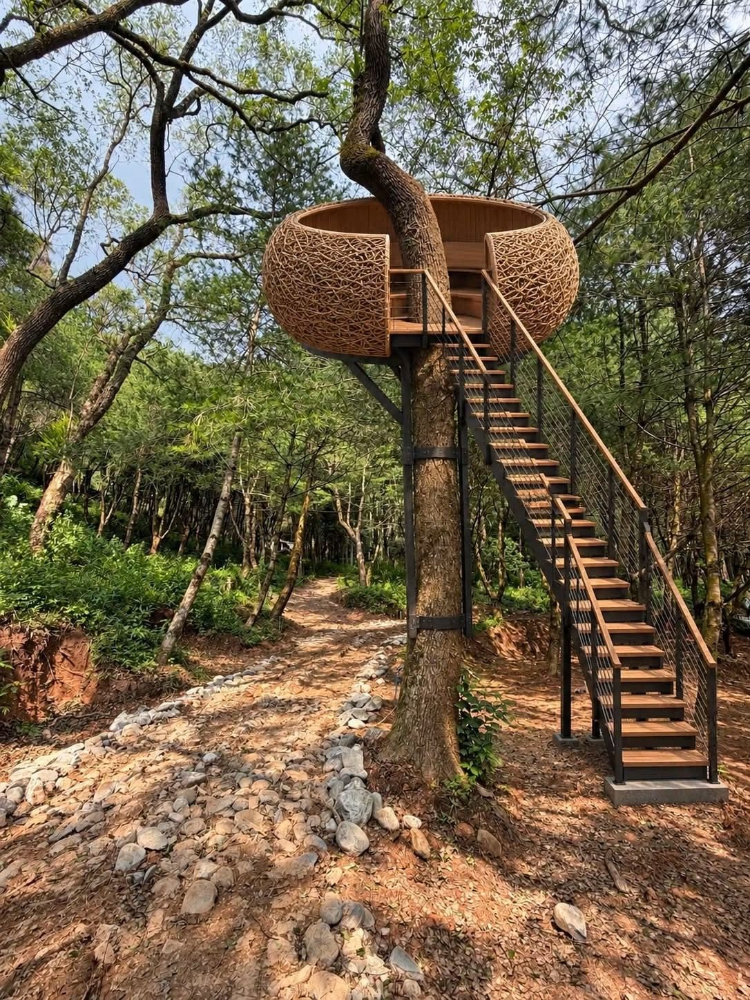
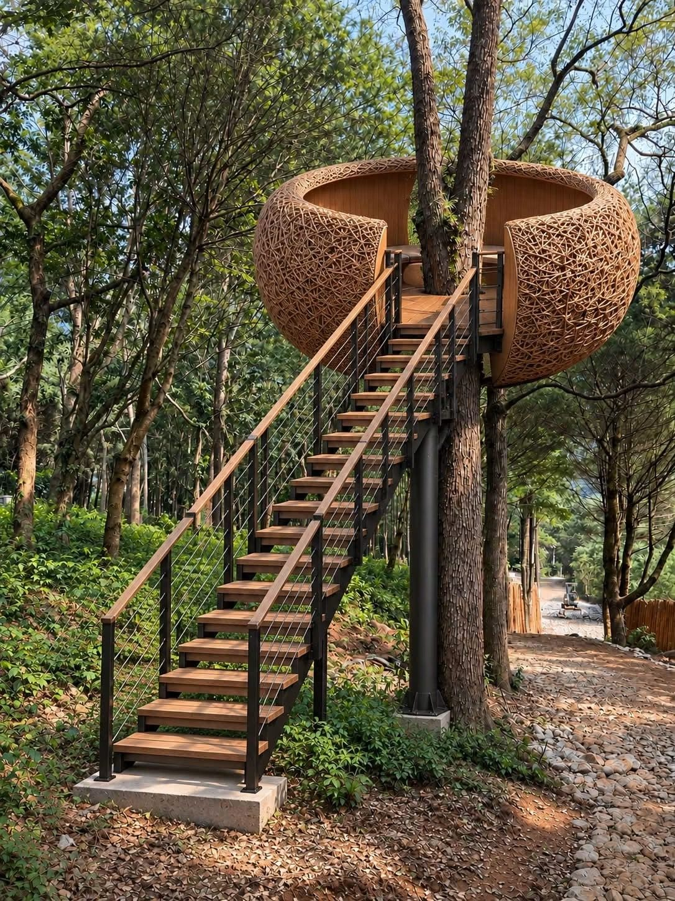
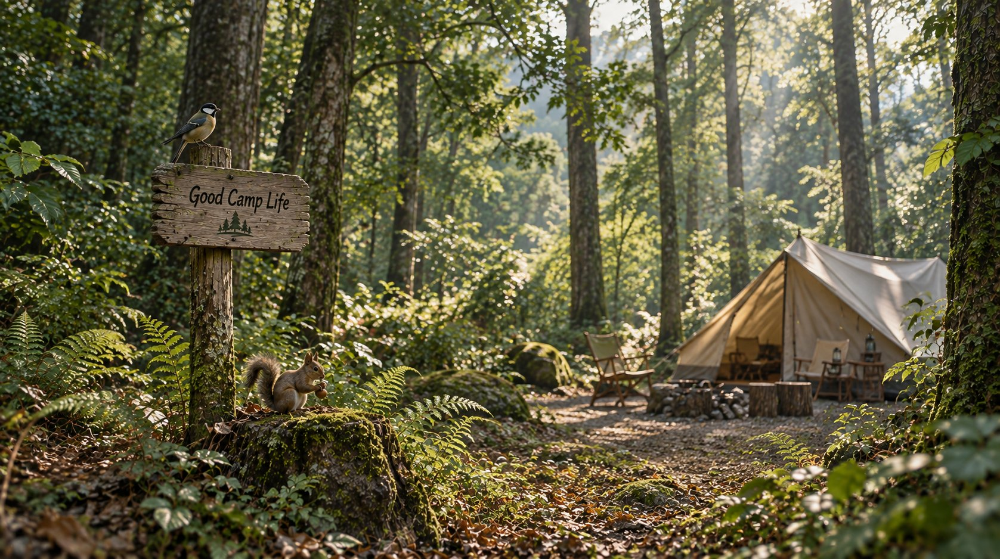
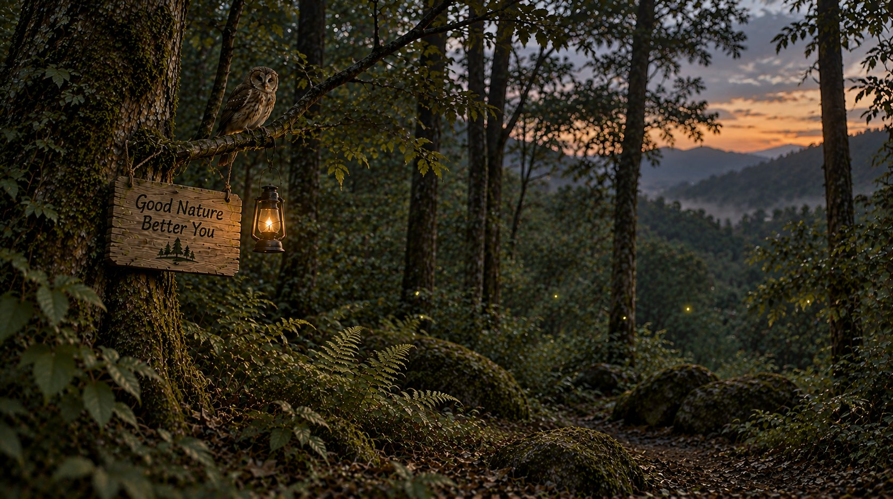
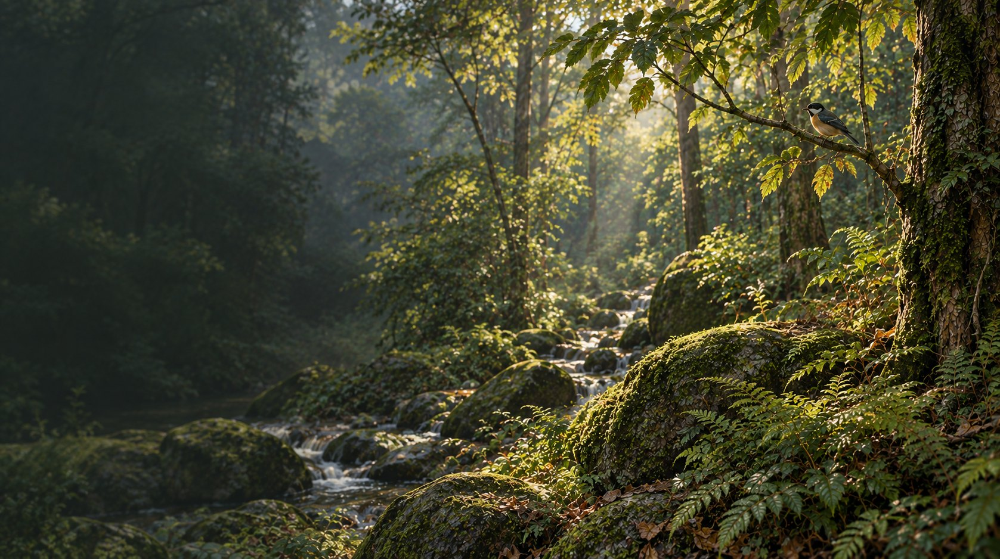

家族傳承 · 五公頃原始森林 A family legacy · Five hectares of primal forest
走進水松千樹之森，暫時放下城市的匆忙。在森林、溪流與四季更迭之中，找回內心最純粹的寧靜。 Step into Shuisong Thousand-Tree Forest and set the rush of the city aside. Amid forest, stream, and the turning seasons, find your quietest self again.
限定收藏A Keepsake
為水松千樹之森譜寫的第一首歌，獻給每一個歸來的人。點下面的按鈕，讓這段森林光影配上它的主題曲一起播放。 The first song written for Shuisong Thousand-Tree Forest, for everyone coming home. Press play below to pair this forest scene with its theme song.

森林生態Forest ecology
園區內約有 2,600 棵、平均樹齡 50 年的老樹環繞，四十年沒有被打擾過的土地，才留得住這樣的靈氣。走進林間，你會聞到落葉與腐植土的氣味，聽見蟲鳴鳥叫此起彼落。山澗溪流層層疊疊，是森林裡最療癒的水聲來源。 The grounds are ringed by roughly 2,600 trees averaging 50 years old — a kind of spirit only land left undisturbed for forty years can grow. Walk beneath the canopy and you'll smell fallen leaves and rich humus, hear insects and birds calling back and forth. A mountain stream tumbles over moss-covered stone, the source of the forest's most soothing sound.
「四十年不灑一滴農藥、不輕易砍一棵樹」——這片森林的靈氣，是時間換來的。 "Forty years without a single drop of pesticide, without a tree felled without cause" — this forest's spirit was earned, one season at a time.

關於我們About us
水松千樹之森座落於原始森林之中，是家族長期經營的土地資產。這片林地由已故的黃炳松老先生親手種樹養林三、四十年，堅持不灑農藥、不輕易砍樹，才留下今天樹齡數十年的原始風貌。我們相信露營不只是搭一頂帳篷，而是重新與自然連結的過程。 Shuisong Thousand-Tree Forest sits deep within untouched woodland, land the family has stewarded for generations. The late Mr. Huang Bing-song planted and tended this forest by hand for thirty to forty years, never spraying pesticide or felling a tree without cause — which is why it still stands today, decades old and essentially wild. We believe camping isn't just pitching a tent; it's the process of reconnecting with nature. 閱讀完整故事Read the full story

保留原生植被與地貌，讓你真正走進森林，而不是走進一座公園。 Native vegetation and terrain left exactly as they are — so you step into a real forest, not a park.

登高遠眺群山層疊，是營區裡最受歡迎的觀景角落之一。 Climb up for layered mountain views — one of the campground's most popular spots.

我們持續投入基礎建設，讓每一次入住都比上一次更舒適安全。 We keep investing in infrastructure, so every stay is a little more comfortable and safe than the last.

建設進度Construction progress

從整地、鋪設營位平台到管理室建置，我們一步步把這片林地準備好，也樂於讓你看見過程中的每一步。 From clearing the ground to laying platform decking and building the site office, we're preparing this land step by step — and happy to show you every stage of it.

沿溪引水打造的生態池，卵石駁岸與原生老樹相映，也是園區重要的生態基地。 A stream-fed ecology pond lined with river stone, framed by the forest's mature trees — an important habitat feature on the grounds.

木棧平台逐步完成，讓紮營更平整穩固。 Wooden platforms going in stage by stage, for flatter and more stable pitches.
提供未來現場服務與物資支援的基地。 A future base for on-site service and supplies.

穿過林蔭步道，就是森林裡的第一口深呼吸。 Walk the shaded trail in, and take your first deep breath of the forest.

木質外觀搭配黑色鋁框，示意圖，實際完工樣貌以現場為準。 Wood-clad exterior with black aluminum trim. Concept render — final look may vary on site.

初期營位規劃採木屑鋪面，兼顧排水與踩踏舒適度，示意圖。 Early-phase sites are planned with wood-chip flooring for drainage and comfort underfoot. Concept render.

依著老樹搭建的鳥巢造型平台，未來將規劃為林間咖啡休憩空間。 A bird's-nest-shaped platform built around a mature tree, planned as an elevated forest café and lounge space.

木構階梯環繞樹幹而上，兩側巢形座位圍繞樹身展開，是園區最具特色的新地標。 A timber staircase spirals up around the trunk to twin nest-like seating pods — one of the campground's most distinctive new landmarks.

營位規劃Site layout
營位分散於林間各處，保有隱私與空間感，不會有帳篷緊貼帳篷的壓迫感。實際位置將於預約確認後與您說明。 Campsites are spread throughout the forest for privacy and breathing room — no tent-to-tent crowding. Exact placement is confirmed once your booking is set.

乾濕分離、定時清潔，露營也能維持舒適的衛浴品質。 Dry and wet areas separated, cleaned on a fixed schedule — comfort doesn't stop at the tent flap.

全區供電穩定，帳篷、行動裝置都能安心充電。 Stable power across the grounds, so your gear and devices stay charged.
森林間可見多樣原生植物與野生動物蹤跡，安靜觀察也是一種享受。 Native plants and wildlife throughout the forest — quiet observation is its own kind of reward.

為什麼選擇我們Why choose us
遠離城市光害，夜晚抬頭就是滿天星斗，適合觀星、也適合什麼都不做。 Far from city light pollution — look up at night and the sky is full of stars. Perfect for stargazing, or for doing nothing at all.
兩千多棵老樹環繞，走進林間深呼吸，就是最天然的森林浴。 Surrounded by thousands of mature trees — breathe deep among them for a natural forest bath.
營位之間保留充足距離，帳篷與帳篷不必肩並肩，讓每個家庭都有自己的空間。 Generous spacing between sites — no tent-to-tent crowding, so every family gets room to breathe.

森林住民Forest residents
四十年沒有農藥、沒有過度開發的森林，養出了豐富又安靜的生態。以下幾張都是營區周邊實拍的畫面。 Forty years without pesticide or heavy development has let a quiet, rich ecosystem take root. These photos were all taken right around the campground.


預約方式How to book
用日曆左右箭頭切換月份，點選日期查看空位，並在右側計算帳篷費用。送出申請後，我們將盡快與您聯繫確認。 Use the arrows to switch months, click a date to check availability and see the price on the right. We'll contact you to confirm once you submit a request.
請點選上方日期Select a date above
一帳（2人）NT$1,200，超過 2 人每加 1 人 +NT$300 NT$1,200 per tent (2 people), +NT$300 per extra person
入住須知Before you stay
入住時，我們會請您與同行旅人一起閱讀並簽署這份公約——也是您可以帶回家的紀念。 At check-in, we'll ask you and your fellow travelers to read and sign the covenant below — yours to take home as a keepsake.

22:00–7:00 為森林靜音時段，不使用KTV、大聲響設備，讓風聲蟲鳴陪你入睡。 Quiet hours 10 PM–7 AM. No karaoke or loud speakers — let the wind and insects sing you to sleep.
不攀折花草樹木、不挖地破壞草皮，營釘依指定位置施作，不餵食野生動物。 Don't pick plants or dig into the ground. Stake tents only where advised, and never feed wildlife.
愛惜公共衛浴與設施、做好垃圾分類，尊重其他旅人的休息與隱私。 Take care of shared bathrooms and facilities, sort trash, and respect other guests' rest and privacy.
請勿攜帶移動式冷氣、電暖器等高耗電設備，全區供電才能穩定又公平。 No portable A/C, space heaters, or other high-draw appliances — this keeps power stable and fair for everyone.
謝謝您願意放慢腳步，也謝謝您願意成為森林的一份子。願今天離開時，您帶走的是美好的回憶，留下的是依然純淨的森林。 Thank you for slowing down, and for becoming part of this forest. May you leave with beautiful memories — and leave the forest just as pure as you found it.